市集內容
市集目標
- 鼓勵線上創作者，營造視覺文化新貌，並開拓國際視野、增加與消費者實際交流之機會。
- 創造出台中和民眾進行文化交流的機會。
- 走出畫時代的恢宏格局，展現插畫特色，讓線上創作者的創作理念，與創新趨勢交流激盪。
創作者介紹
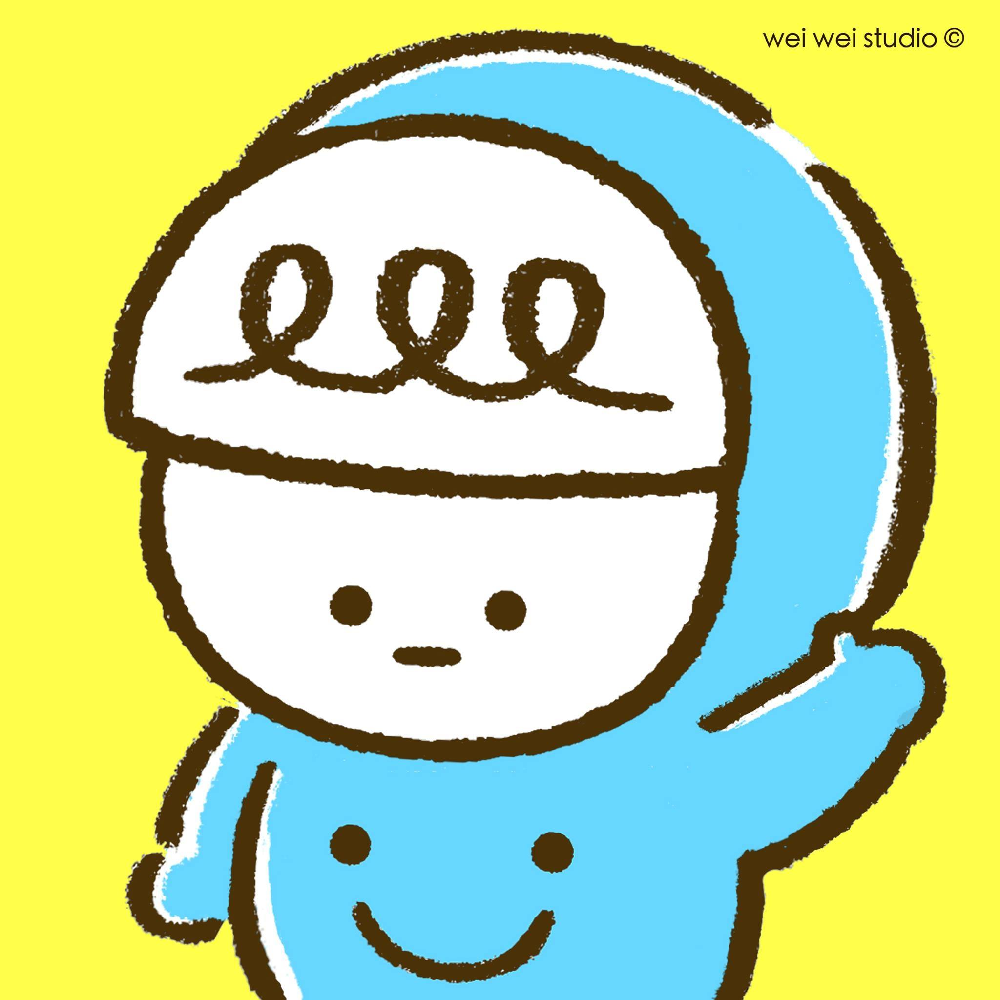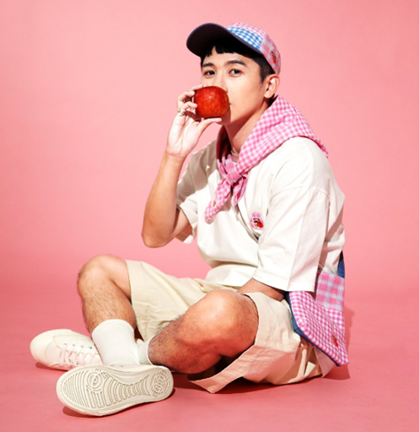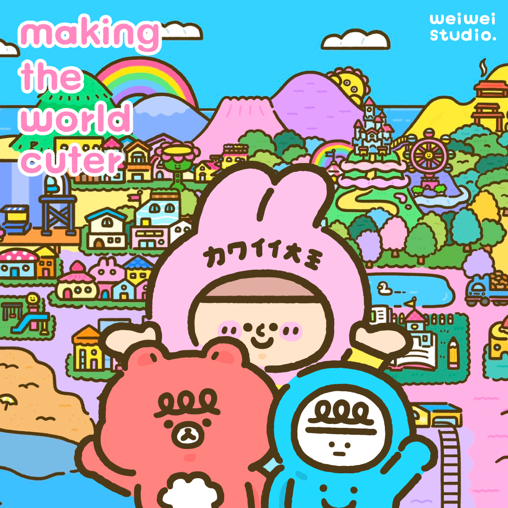wei wei / weiweiboy
圓潤身形、無表情面容，穿著帶笑臉圖案的藍色連身衣，這隻從淚水裡誕生的微笑精靈「喂喂」，經常出現在插畫家weiweiboy的作品中，就是要提醒大家，無論遇到什麼事，都要用微笑來面對。而希望帶給人微笑，也正是他的創作宗旨。
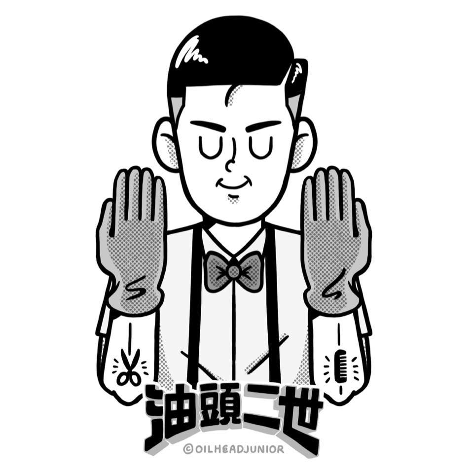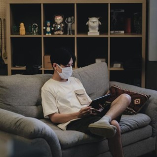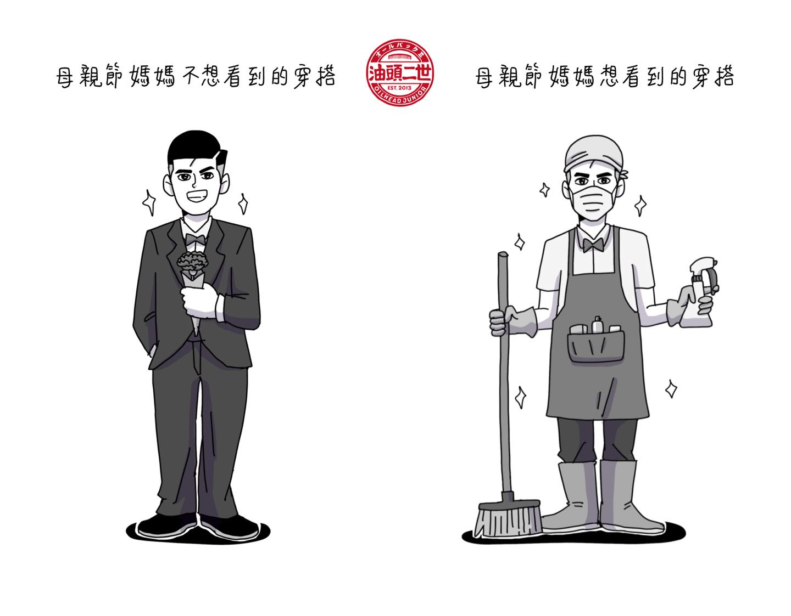油頭二世
油頭二世憑藉著緊扣當下潮流的時事主題與幽默詼諧文案，迅速吸引網絡的大量關注，無論潮流如何演變，從其創作中依舊能輕易找到藏在日常周圍的共鳴，對流行的觀察敏銳，同時透過有趣的暗諷方式述說，卻不因此批判。
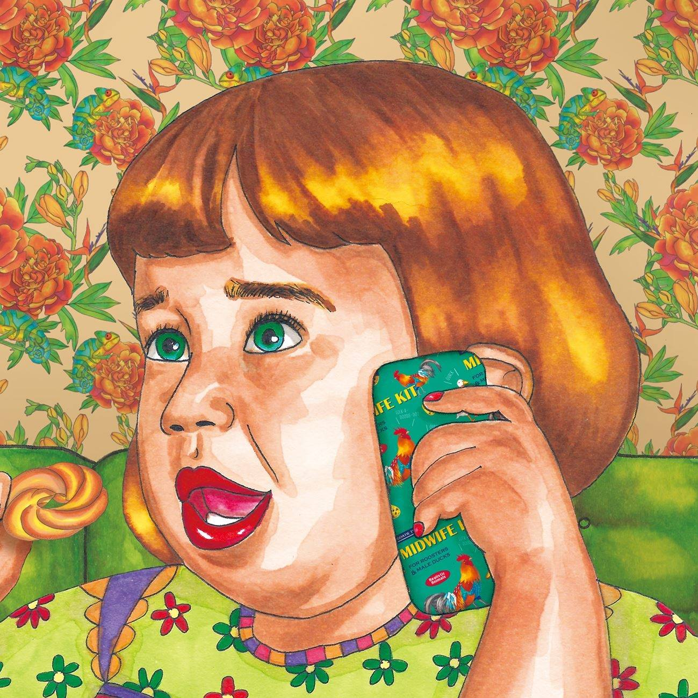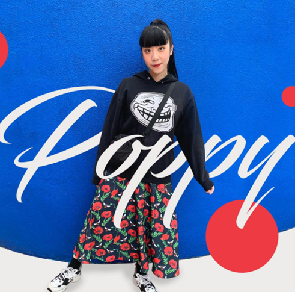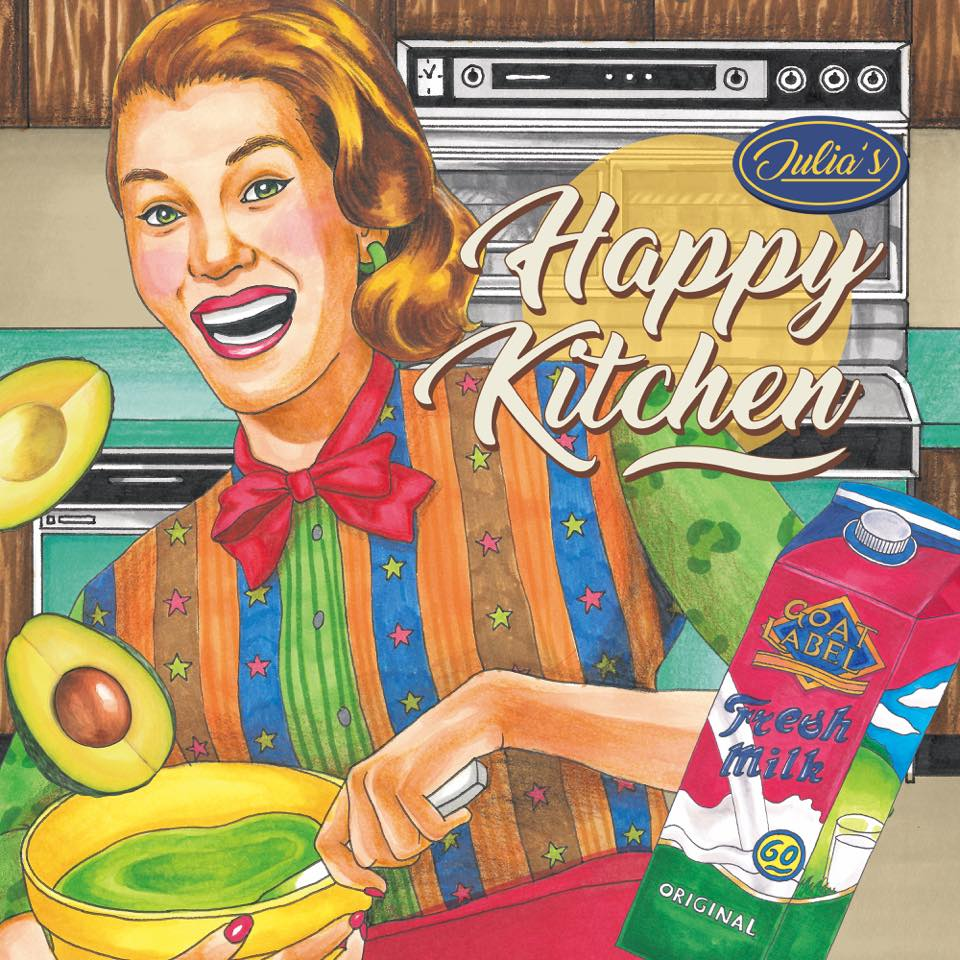山羊先生
以黑色的線條和麥克筆暈染上色，用全手繪的復古插畫作品，來表現對過去時代的喜愛與懷念。商品以文具、印刷品為主，近期也陸續加入服飾配件相關產品。除了自己生產的商品外，也有和各個品牌企業合作插畫設計。
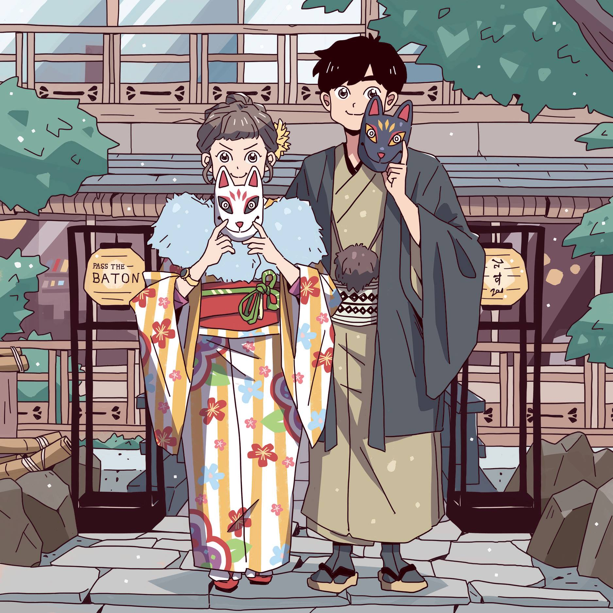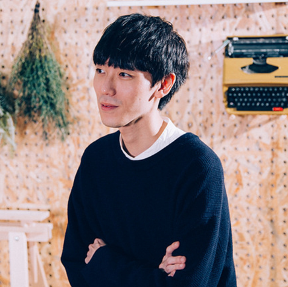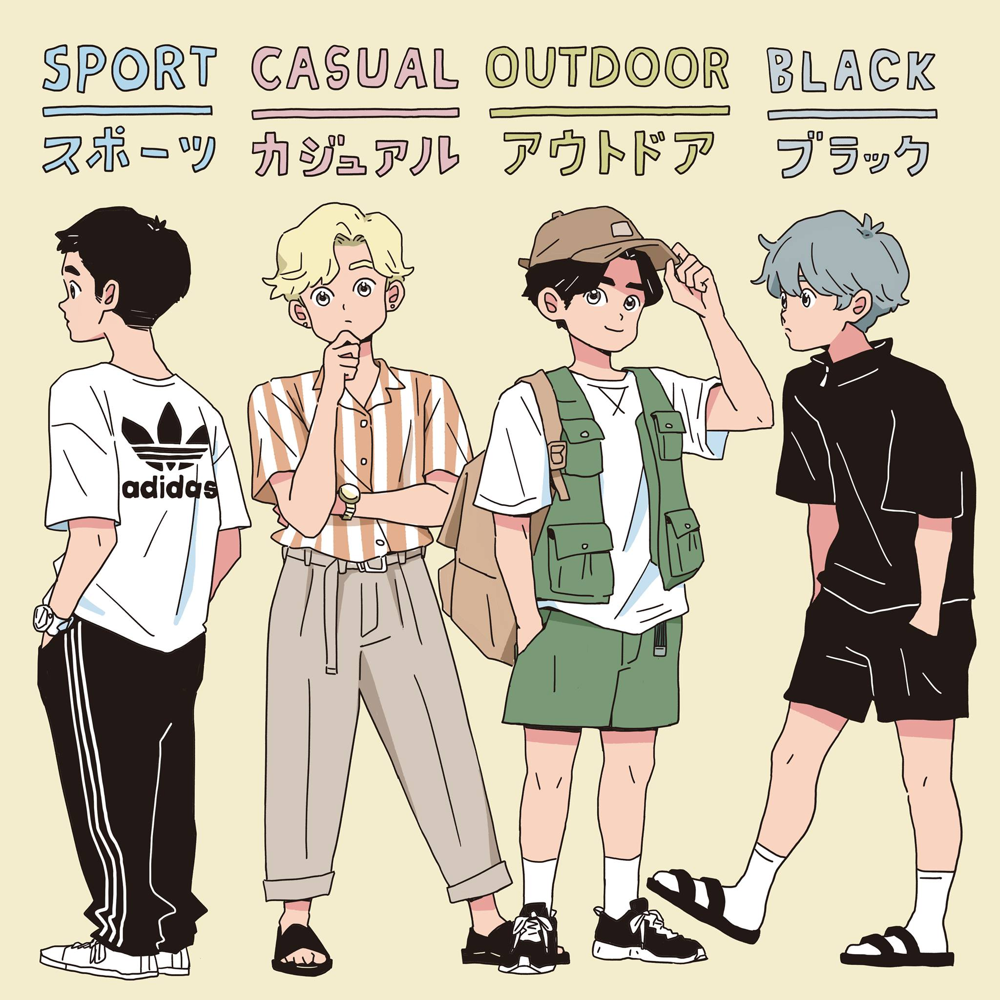Zzifan_z / 子凡
運用生活題材引起讀者共鳴，要如何用可愛的互動來包裝內容，讓人覺得溫暖、有趣，並不是件容易的事。作者很講究服裝搭配，會在作品中考慮這些細節，像是把男、女主角的個性融入到他們的穿著打扮裡。